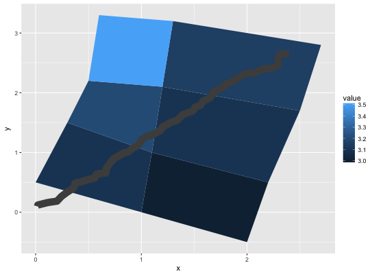

Polygon, a filled path.
Polygons are very similar to paths (as drawn by geom_path)
except that the start and end points are connected and the inside is
coloured by fill. The group aesthetic determines which cases
are connected together into a polygon.
geom_polygon(mapping = NULL, data = NULL, stat = "identity", position = "identity", ..., na.rm = FALSE, show.legend = NA, inherit.aes = TRUE)
Arguments
- mapping
- Set of aesthetic mappings created by
aesoraes_. If specified andinherit.aes = TRUE(the default), it is combined with the default mapping at the top level of the plot. You must supplymappingif there is no plot mapping. - data
- The data to be displayed in this layer. There are three
options:
If
NULL, the default, the data is inherited from the plot data as specified in the call toggplot. Adata.frame, or other object, will override the plot data. All objects will be fortified to produce a data frame. Seefortifyfor which variables will be created. Afunctionwill be called with a single argument, the plot data. The return value must be adata.frame., and will be used as the layer data. - stat
- The statistical transformation to use on the data for this layer, as a string.
- position
- Position adjustment, either as a string, or the result of a call to a position adjustment function.
- ...
- other arguments passed on to
layer. These are often aesthetics, used to set an aesthetic to a fixed value, likecolor = "red"orsize = 3. They may also be parameters to the paired geom/stat. - na.rm
- If
FALSE(the default), removes missing values with a warning. IfTRUEsilently removes missing values. - show.legend
- logical. Should this layer be included in the legends?
NA, the default, includes if any aesthetics are mapped.FALSEnever includes, andTRUEalways includes. - inherit.aes
- If
FALSE, overrides the default aesthetics, rather than combining with them. This is most useful for helper functions that define both data and aesthetics and shouldn't inherit behaviour from the default plot specification, e.g.borders.
Aesthetics
\aesthetics{geom}{polygon}
See also
geom_path for an unfilled polygon,
geom_ribbon for a polygon anchored on the x-axis
Examples
# When using geom_polygon, you will typically need two data frames: # one contains the coordinates of each polygon (positions), and the # other the values associated with each polygon (values). An id # variable links the two together ids <- factor(c("1.1", "2.1", "1.2", "2.2", "1.3", "2.3")) values <- data.frame( id = ids, value = c(3, 3.1, 3.1, 3.2, 3.15, 3.5) ) positions <- data.frame( id = rep(ids, each = 4), x = c(2, 1, 1.1, 2.2, 1, 0, 0.3, 1.1, 2.2, 1.1, 1.2, 2.5, 1.1, 0.3, 0.5, 1.2, 2.5, 1.2, 1.3, 2.7, 1.2, 0.5, 0.6, 1.3), y = c(-0.5, 0, 1, 0.5, 0, 0.5, 1.5, 1, 0.5, 1, 2.1, 1.7, 1, 1.5, 2.2, 2.1, 1.7, 2.1, 3.2, 2.8, 2.1, 2.2, 3.3, 3.2) ) # Currently we need to manually merge the two together datapoly <- merge(values, positions, by = c("id")) p <- ggplot(datapoly, aes(x = x, y = y)) + geom_polygon(aes(fill = value, group = id)) p# Which seems like a lot of work, but then it's easy to add on # other features in this coordinate system, e.g.: stream <- data.frame( x = cumsum(runif(50, max = 0.1)), y = cumsum(runif(50,max = 0.1)) ) p + geom_line(data = stream, colour = "grey30", size = 5)# And if the positions are in longitude and latitude, you can use # coord_map to produce different map projections.